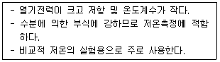

가스산업기사 (2020-06-06 기출문제)
1과목: 연소공학
1. 증기운 폭발에 영향을 주는 인자로서 가장 거리가 먼 것은?
- 혼합비
- 점화원의 위치
- 방출된 물질의 양
- 증발된 물질의 분율
(정답률: 72%)

2. 일반적인 연소에 대한 설명으로 옳은 것은?
- 온도의 상승에 따라 폭발범위는 넓어진다.
- 압력 상승에 따라 폭발범위는 좁아진다.
- 가연성가스에서 공기 또는 산소의 농도 증가에 따라 폭발범위는 좁아진다.
- 공기 중에서 보다 산소 중에서 폭발범위는 좁아진다.
(정답률: 84%)
3. 최소 점화에너지(MIE)에 대한 설명으로 틀린 것은?
- MIE는 압력의 증가에 따라 감소한다.
- MIE는 온도의 증가에 따라 증가한다.
- 질소농도의 증가는 MIE를 증가시킨다.
- 일반적으로 분진의 MIE는 가연성가스보다 큰 에너지 준위를 가진다.
(정답률: 78%)
4. 표면연소란 다음 중 어느 것을 말하는가?
- 오일표면에서 연소하는 상태
- 고체연료가 화염을 길게 내면서 연소하는 상태
- 화염의 외부표면에 산소가 접촉하여 연소하는 현상
- 적열된 코크스 또는 숯의 표면 또는 내부에 산소가 접촉하여 연소하는 상태
(정답률: 82%)
5. 등심연소 시 화염의 길이에 대하여 옳게 설명한 것은?
- 공기 온도가 높을수록 길어진다.
- 공기 온도가 낮을수록 길어진다.
- 공기 유속이 높을수록 길어진다.
- 공기 유속 및 공기온도가 낮을수록 길어진다.
(정답률: 71%)
6. 이산화탄소로 가연물을 덮는 방법은 소화의 3대 효과 중 다음 어느 것에 해당하는가?
- 제거효과
- 질식효과
- 냉각효과
- 촉매효과
(정답률: 88%)
7. 화재와 폭발을 구별하기 위한 주된 차이는?
- 에너지 방출속도
- 점화원
- 인화점
- 연소한계
(정답률: 89%)
8. 완전연소의 구비조건으로 틀린 것은?
- 연소에 충분한 시간을 부여한다.
- 연료를 인화점 이하로 냉각하여 공급한다.
- 적정량의 공기를 공급하여 연료와 잘 혼합한다.
- 연소실 내의 온도를 연소 조건에 맞게 유지한다.
(정답률: 89%)
9. 위험성평가기법 중 공정에 존재하는 위험요소들과 공정의 효율을 떨어뜨릴 수 있는 운전상의 문제점을 찾아내어 그 원인을 제거하는 정성적인 안정성평가기법은?
- What-if
- HEA
- HAZOP
- FMECA
(정답률: 88%)
10. 폭굉유도거리(DID)에 대한 설명으로 옳은 것은?
- 관경이 클수록 짧다.
- 압력이 낮을수록 짧다.
- 점화원의 에너지가 약할수록 짧다.
- 정상연소 속도가 빠른 혼합가스일수록 짧다.
(정답률: 73%)
11. 메탄올 96g과 아세톤 116g을 함께 진공상태의 용기에 넣고 기화시켜 25℃의 혼합기체를 만들었다. 이 때 전압력은 약 몇 mmHg인가? (단, 25℃에서 순수한 메탄올과 아세톤의 증기압 및 분자량은 각각 96.5mmHg, 56mmHg, 및 32, 58이다.)
- 76.3
- 80.3
- 152.5
- 170.5
(정답률: 59%)
12. 프로판 1Sm3를 완전연소시키는데 필요한 이론공기량은 몇 Sm3인가?
- 5.0
- 10.5
- 21.0
- 23.8
(정답률: 65%)
13. 중유의 저위발열량이 10000kcal/kg의 연료 1kg을 연소시킨 결과 연소열을 5500kcal/kg이었다. 연소효율은 얼마인가?
- 45%
- 55%
- 65%
- 75%
(정답률: 84%)
14. 이상기체에 대한 설명으로 틀린 것은?
- 이상기체 상태 방정식을 따르는 기체이다.
- 보일-샤를의 법칙을 따르는 기체이다.
- 아보가드로 법칙을 따르는 기체이다.
- 반데르 발스 법칙을 따르는 기체이다.
(정답률: 84%)
15. 시안화수소 위험도(H)는 약 얼마인가?
- 5.8
- 8.8
- 11.8
- 14.8
(정답률: 68%)
16. LPG를 연료로 사용할 때의 장점으로 옳지 않은 것은?
- 방열량이 크다.
- 조성이 일정하다.
- 특별한 가압장치가 필요하다.
- 용기, 조정기와 같은 공급설비가 필요하다.
(정답률: 81%)
17. 연소 반응이 일어나기 위한 필요 충분조건으로 볼 수 없는 것은?
- 점화원
- 시간
- 공기
- 가연물
(정답률: 88%)
18. 다음 기체연료 중 CH4 및 H2를 주성분으로 하는 가스는?
- 고로가스
- 발생로가스
- 수성가스
- 석탄가스
(정답률: 71%)
19. 기체연료-공기혼합기체의 최대연소속도(대기압, 25℃)가 가장 빠른 가스는?
- 수소
- 메탄
- 일산화탄소
- 아세틸렌
(정답률: 71%)
20. 메탄 85v%, 에탄 10v%, 프로판 4v%, 부탄1v%의 조성을 갖는 혼합가스의 공기 중 폭발 하한계는 약 얼마인가?
- 4.4%
- 5.4%
- 6.2%
- 7.2%
(정답률: 67%)
2과목: 가스설비
21. 조정압력이 3.3kPa 이하인 액화석유가스 조정기의 안정장치 작동정지 압력은?
- 7kPa
- 5.04~8.4kPa
- 5.6~8.4kPa
- 8.4~10kPa
(정답률: 62%)
22. 어떤 냉동기에서 0℃의 물로 0℃의 얼음 2톤을 만드는데 50kWㆍh의 일이 소요되었다. 이 냉동기의 성능계수는? (단, 물의 응고열은 80kcal/kg이다.)
- 3.7
- 4.7
- 5.7
- 6.7
(정답률: 36%)
23. 가스용 폴리에틸렌 관의 장점이 아닌 것은?
- 부식에 강하다.
- 일광, 열에 강하다.
- 내한성이 우수하다.
- 균일한 단위제품을 얻기 쉽다.
(정답률: 70%)
24. 정압기(governor)의 기본구성 중 2차 압력을 감지하고 변동사항을 알려주는 역할을 하는 것은?
- 스프링
- 메인밸브
- 다이어프램
- 웨이트
(정답률: 86%)
25. 도시가스 저압배관의 설계 시 반드시 고려하지 않아도 되는 사항은?
- 허용 압력손실
- 가스 소비량
- 연소기의 종류
- 관의 길이
(정답률: 63%)
26. 일반도시가스사업자의 정압기에서 시공감리 기준 중 기능검사에 대한 설명으로 틀린 것은?
- 2차 압력을 측정하여 작동압력을 확인한다.
- 주정압기의 압력변화에 따라 예비정압기가 정상작동 되는지 확인한다.
- 가스차단장치의 개폐상태를 확인한다.
- 지하에 설치된 정압기실 내부에 100Lux 이상의 조명도가 확보되는지 확인한다.
(정답률: 85%)
27. 발열량이 1⑤00kcal/m3인 가스를 출력 12000kcal/h인 연소기에서 연소효율 80%로 연소시켰다. 이 연소기의 용량은?
- 0.70m3/h
- 0.91m3/h
- 1.14m3/h
- 1.43m3/h
(정답률: 45%)
28. 전기방식에 대한 설명으로 틀린 것은?
- 전해질 중 물, 토양, 콘크리트 등에 노출된 금속에 대하여 전류를 이용하여 부식을 제어하는 방식이다.
- 전기방식은 부식 자체를 제거할 수 있는 것이 아니고 음극에서 일어나는 부식을 양극에서 일어나도록 하는 것이다.
- 방전류는 양극에서 양극반응에 의하여 전해질로 이온이 누출되어 금속표면으로 이동하게 되고 음극 표면에서는 음극반응에 의하여 전류가 유입되게 된다.
- 금속에서 부식을 방지하기 위해서는 방식전류가 부식전류 이하가 되어야 한다.
(정답률: 66%)
29. LPG를 탱크로리에서 저장탱크로 이송 시 작업을 중단해야 하는 경우로서 가장 거리가 먼 것은?
- 누출이 생긴 경우
- 과충전이 된 경우
- 작업 중 주위에 화재 발생 시
- 압축기 이용 시 베이퍼룩 발생 시
(정답률: 70%)
30. 터보형 펌프에 속하지 않는 것은?
- 사류 펌프
- 축류 펌프
- 플런저 펌프
- 센트리퓨걸 펌프
(정답률: 66%)
31. Loading 형으로 정특성, 동특성이 양호하며 비교적 콤팩트한 형식의 정압기는?
- KRF식 정압기
- Fisher식 정압기
- Reynoldst식 정압기
- Axial-flow식 정압기
(정답률: 83%)
32. 2개의 단열과정과 2개의 등압과정으로 이루어진 가스터빈의 이상 사이클은?
- 에릭슨사이클
- 브레이턴사이클
- 스털링사이클
- 아트킨슨사이클
(정답률: 79%)
33. 캐비테이션 현상의 발생 방지책에 대한 설명으로 가장 거리가 먼 것은?
- 펌프의 회전수를 높인다.
- 흡입 관경을 크게 한다.
- 펌프의 위치를 낮춘다.
- 양흡입 펌프를 사용한다.
(정답률: 78%)
34. LP가스를 이용한 도시가스 공급방식이 아닌 것은?
- 직접 혼입방식
- 공기 혼입방식
- 변성 혼입방식
- 생가스 혼입방식
(정답률: 79%)
35. 암모니아 압축기 실린더에 일반적으로 워터재킷을 사용하는 이유가 아닌 것은?
- 윤활유의 탄화를 방지한다.
- 압축 소요일량을 크게 한다.
- 압축 효율의 향상을 도모한다.
- 밸브 스프링의 수명을 연장시킨다.
(정답률: 72%)
36. 금속재료에 대한 풀림의 목적으로 옳지 않은 것은?
- 인성을 향상시킨다.
- 내부응력을 제거한다.
- 조직을 조대화하여 높은 경도를 얻는다.
- 일반적으로 강의 경도가 낮아져 연화된다.
(정답률: 62%)
37. 유수식 가스홀더의 특징에 대한 설명으로 틀린 것은?
- 제조설비가 저압인 경우에 사용한다.
- 구형 홀더에 비해 유효 가동량이 많다.
- 가스가 건조하면 물탱크의 수분을 흡수한다.
- 부지면적과 기초공사비가 적게 소요된다.
(정답률: 72%)
38. 염소가스 압축기에 주로 사용되는 윤활제는?
- 진한 황산
- 양질의 광유
- 식물성유
- 묽은 글리세린
(정답률: 78%)
39. 아세틸렌가스를 2.5MPa의 압력으로 압축할 때 주로 사용되는 희석제는?
- 질소
- 산소
- 이산화탄소
- 암모니아
(정답률: 76%)
40. 액화프로판 400kg을 내용적 50L의 용기에 충전 시 필요한 용기의 개수는?
- 13개
- 15개
- 17개
- 19개
(정답률: 53%)
3과목: 가스안전관리
41. 암모니아 저장탱크에는 가스의 용량이 저장탱크 내용적이 몇 %를 초과하는 것을 방지하기 위한 과충전 방지조치를 강구하여야 하는가?
- 85%
- 90%
- 95%
- 98%
(정답률: 76%)
42. 고압가스 일반제조의 시설기준에 대한 설명으로 옳은 것은?
- 산소 초저온저장탱크에는 환형유리관 액면계를 설치할 수 없다.
- 고압가스설비에 장치하는 압력계는 상용압력의 1.1배 이상 2배 이하의 최고눈금이 있어야 한다.
- 공기보다 가벼운 가연성가스의 가스설비실에는 1방향 이상의 개구부 또는 자연환기 설비를 설치하여야 한다.
- 저장능력이 1000톤 이상인 가연성 액화가스의 지상 저장탱크의 주위에는 방류둑을 설치하여야 한다.
(정답률: 72%)
43. 가스를 충전하는 경우에 밸브 및 배관이 얼었을 때의 응급조치하는 방법으로 부적절한 것은?
- 열습포를 사용한다.
- 미지근한 물로 녹인다.
- 석유 버너 불로 녹인다.
- 40℃ 이하의 물로 녹인다.
(정답률: 85%)
44. 폭발 및 인화성 위험물 취급 시 주의하여야 할 사항으로 틀린 것은?
- 습기가 없고 양지바른 곳에 둔다.
- 취급자 외에는 취급하지 않는다.
- 부근에서 화기를 사용하지 않는다.
- 용기는 난폭하게 취급하거나 충격을 주어서는 아니 된다.
(정답률: 88%)
45. 일반적인 독성가스의 제독제로 사용되지 않는 것은?
- 소석회
- 탄산소다 수용액
- 물
- 암모니아 수용액
(정답률: 71%)
46. 고압가스안전성평가기준에서 정한 위험성 평가 기법 중 정성적 평기기법에 해당되는 것은?
- Check List 기법
- HEA 기법
- FTA 기법
- CCA 기법
(정답률: 83%)
47. 아세틸랜용 용접용기 제조 시 내압시험압력이란 최고충전압력 수치의 몇 배의 압력을 말하는가?
- 1.2
- 1.8
- 2
- 3
(정답률: 67%)
48. 지름이 각각 8m인 LPG 지상 저장탱크사이에 물분무장치를 하지 않은 경우 탱크사이에 유지해야 되는 간격은?
- 1m
- 2m
- 4m
- 8m
(정답률: 67%)
49. 고압가스특정제조시설에서 안전구역 안의 고압가스설비는 그 외면으로부터 다른 안전구역 안에 있는 고압가스설비의 외면까지 몇 m 이상의 거리를 유지하여야 하는가?
- 10m
- 20m
- 30m
- 50m
(정답률: 55%)
50. 액화석유가스 자동차에 고정된 용기충전의 시설에 설치되는 안전밸브 중 압축기의 최종단에 설치된 안전밸브의 작동조정의 최소 주기는?
- 6월에 1회 이상
- 1년에 1회 이상
- 2년에 1회 이상
- 3년에 1회 이상
(정답률: 71%)
51. 액화가스 저장탱크의 저장능력을 산출하는 식은? (단, Q:저장능력(m3), W:저장능력(kg), V:내용적(L), P:35℃에서 최고충전압력(MPa), d:사용온도 내에서 액화가스 비중(kg/L), C:가스의 종류에 따른 정수이다.)
- W=V/C
- W=0.9dV
- Q=(10P+1)V
- Q=(P+2)V
(정답률: 85%)
52. 고압가스 일반제조시설에서 저장탱크 및 처리설비를 실내에 설치하는 경우의 기준으로 틀린 것은?
- 저장탱크실과 처리설비실을 각각 구분하여 설치하고 강제환기시설을 갖춘다.
- 저장탱크실의 천장, 벽 및 바닥의 두께는 20cm 이상으로 한다.
- 저장탱크를 2개 이상 설치하는 경우에는 저장탱크실을 각각 구분하여 설치한다.
- 저장탱크에 설치한 안전밸브는 지상 5m 이상의 높이에 방출구가 있는 가스방출관을 설치한다.
(정답률: 68%)
53. 고압가스 운반차량의 운행 중 조치사항으로 틀린 것은?
- 400km 이상 거리를 운행할 경우 중간에 휴식을 취한다.
- 독성가스를 운반 중 도난당하거나 분실한 때에는 즉시 그 내용을 경찰서에 신고한다.
- 독성가스를 운반하는 때는 그 고압가스의 명칭, 성질 및 이동 중의 재해방지를 위하여 필요한 주의사항을 기재한 서류를 운전자 또는 운반책임자에게 교부한다.
- 고압가스를 적재하여 운반하는 차량은 차량의 고장, 교통사정, 운전자 또는 운반책임자의 휴식할 경우 운반책임자와 운전자가 동시에 이탈하지 아니 한다.
(정답률: 83%)
54. 초저온 용기의 재료로 적합한 것은?
- 오스테나이트계 스테인리스 강 또는 알루미늄 합금
- 고탄소강 또는 Cr강
- 마텐자이트계 스테인리스강 또는 고탄소강
- 알루미늄합금 또는 Ni-Cr강
(정답률: 69%)
55. 질소 충전용에서 질소가스의 누출여부를 확인하는 방법으로 가장 쉽고 안전한 방법은?
- 기름 사용
- 소리 감지
- 비눗물 사용
- 전기스파크 이용
(정답률: 87%)
56. 고압가스용 이음매 없는 요기 제조 시 탄소함유량은 몇 % 이하를 사용하여야 하는가?
- 0.04
- 0.⑤
- 0.33
- 0.55
(정답률: 48%)
57. 포스겐가스(COCl2)를 취급할 때의 주의사항으로 옳지 않은 것은?
- 취급 시 방독마스크를 착용할 것
- 공기보다 가벼우므로 환기시설은 보관장소의 윗 쪽에 설치할 것
- 사용 후 폐가스를 방출할 때에는 중화시킨 후 옥외로 방출시킬 것
- 취급장소는 환기가 잘 되는 곳일 것
(정답률: 67%)
58. 2단 감압식 1차용 액화석유가스조정기를 제조할 때 최대 폐쇄압력은 얼마 이하로 해야 하는가? (단, 입구압력이 0.1MPa~1.56MPa이다.)
- 3.5kPa
- 83kPa
- 95kPa
- 조정압력의 2.5배 이하
(정답률: 46%)
59. 폭발예방 대책을 수립하기 위하여 우선적으로 검토하여야 할 사항으로 가장 거리가 먼 것은?
- 요인분석
- 위험성 평가
- 피해예측
- 피해보상
(정답률: 88%)
60. 특정설비에 대한 표시 중 기화장치에 각인 또는 표시해야 할 사항이 아닌 것은?
- 내압시험압력
- 가열방식 및 형식
- 설비별 기호 및 번호
- 사용하는 가스의 명칭
(정답률: 54%)
4과목: 가스계측
61. 가스미터의 원격계측(검침) 시스템에서 원격계측 방법으로 가장 거리가 먼 것은?
- 제트식
- 기계식
- 펄스식
- 전자식
(정답률: 74%)
62. 외란의 영향으로 인하여 제어량이 목표치 50L/min에서 53L/min으로 변하였다면 이 때 제어편차는 얼마인가?
- +3L/min
- -3L/min
- +6.0%
- -6.0%
(정답률: 64%)
63. He 가스 중 불순물로서 N2:2%, CO:5%, CH4:1%, H2:5%가 들어있는 가스를 가스크로마토그래피로 분석하고자 한다. 다음 중 가장 적당한 검출기는?
- 열전도검출기(TCD)
- 불꽃이온화검출기(FID)
- 불꽃광도검출기(FPD)
- 환원성가스검출기(RGD)
(정답률: 46%)
64. 초음파 유량계에 대한 설명으로 틀린 것은?
- 압력손실이 거의 없다.
- 압력은 유량에 비례한다.
- 대구경 관로의 측정이 가능하다.
- 액체 중 고형물이나 기포가 많이 포함되어 있어도 정도가 좋다.
(정답률: 72%)
65. 접촉식 온도계의 종류와 특징을 연결한 것 중 틀린 것은?
- 유리 온도계-액체의 온도에 따른 팽창을 이용한 온도계
- 바이메탈 온도계-바이메탈이 온도에 따라 굽히는 정도가 다른 점을 이용한 온도계
- 열전대 온도계-온도차이에 의한 금속의 열상승 속도의 차이를 이용한 온도계
- 저항 온도계-온도 변화에 따른 금속의 전기저항 변화를 이용한 온도계
(정답률: 67%)
66. 습식가스미터 특징에 대한 설명으로 옳지 않은 것은?
- 계량이 정확하다.
- 설치 공간이 작다.
- 사용 중에 기차의 변동이 거의 없다.
- 사용 중에 수위 조정 등의 관리가 필요하다.
(정답률: 73%)
67. 다음 가스 분석법 중 흡수분석법에 해당되지 않는 것은?
- 햄펠법
- 게겔법
- 오르자트법
- 우인클러법
(정답률: 80%)
68. 아르키메데스의 원리를 이용하는 압력계는?
- 부르동관 압력계
- 링밸런스식 압력계
- 침종식 압력계
- 벨로우즈식 압력계
(정답률: 73%)
69. 되먹임제어에 대한 설명으로 옳은 것은?
- 열린 회로제어이다.
- 비교부가 필요 없다.
- 되먹임이란 출력신호를 입력신호로 다시 되돌려 보내는 것을 말한다.
- 되억임제어시스템은 선형 제어시스템에 속한다.
(정답률: 79%)
70. 계측에 사용되는 열전대 중 다음(보기)의 특징을 가지는 온도계는?

- R형
- T형
- J형
- K형
(정답률: 64%)
71. 평균유속이 3m/s인 파이프를 25L/s의 유량이 흐르도록 하려면 이 파이프의 지름을 약 몇 mm로 해야 하는가?
- 88mm
- 93mm
- 98mm
- 103mm
(정답률: 49%)
72. 전기저항식 습도계의 특징에 대한 설명 중 틀린 것은?
- 저온도의 측정이 가능하고, 응답이 빠르다.
- 고습도에 장기간 방치하면 감습막이 유동한다.
- 연속기록, 원격측정, 자동제어에 주로 이용된다.
- 온도계수가 비교적 작다.
(정답률: 58%)
73. 여과기(strainer)의 설치가 필요한 가스미터는?
- 터빈가스미터
- 루트가스미터
- 막식가스미터
- 습식가스미터
(정답률: 64%)
74. 가스보일러에서 가스를 연소시킬 때 불완전연소로 발생하는 가스에 중독될 경우 생명을 잃을 수도 있다. 이 때 이 가스를 검지하기 위하여 사용하는 시험지는?
- 연당지
- 염화파라듐지
- 하리슨씨 시약
- 질산구리벤젠지
(정답률: 68%)
75. Block 선도의 등가변환에 해당하는 것만으로 짝지어진 것은?
- 전달요소 결합, 가합점 치환, 직렬 결합, 피드백 치환
- 전달요소 치환, 인출점 치환, 병렬 결합, 피드백 결합
- 인출점 치환, 가합점 결합, 직렬 결합, 병렬 결합
- 전달요소 이동, 가합점 결합, 직렬 결합, 피드백 결합
(정답률: 69%)
76. 가스센서에 이용되는 물리적 현상으로 가장 옳은 것은?
- 압전효과
- 조셉슨 효과
- 흡착효과
- 광전효과
(정답률: 56%)
77. 실측식 가스미터가 아닌 것은?
- 터빈식
- 건식
- 습식
- 막식
(정답률: 78%)
78. 전극식 액면계의 특징에 대한 설명으로 틀린 것은?
- 프로브 형성 및 부착위치와 길이에 따라 정전용량이 변화한다.
- 고유저항이 큰 액체에는 사용이 불가능하다.
- 액체의 고유저항 차이에 따라 동작점이 차이가 발생하기 쉽다.
- 내식성이 강한 전극봉이 필요하다.
(정답률: 47%)
79. 반도체 스트레인 게이지의 특징이 아닌 것은?
- 높은 저항
- 높은 안정성
- 큰 게이지상수
- 낮은 피로수명
(정답률: 69%)
80. 헴펠(Hempel)법에 의한 분석순서가 바른 것은?
- CO2→CmHn→O2→CO
- CO→CmHn→O2→CO2
- CO2→O2→CmHn→CO
- CO→O2→CmHn→CO2
(정답률: 64%)